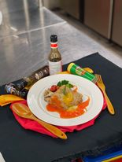

目錄
綠咖哩義大利麵
鮮蔬乳酪鮭魚塔
心得
雞腿佐甜椒醬

融化奶油 百里香迷迭香切碎 香料麵包粉 匈牙利紅椒粉 拌勻
花椰菜切一朵一朵 番茄上頭切十字（油 鹽巴 胡椒 百里香少許）
中間切兩圈 茄子切斜片 番茄切片用少許液體油抹上面 用少許鹽巴胡椒百里香抹上面
鮭魚 白胡椒鹽巴白酒少許醃漬
麵粉兩匙左右
魚沾麵粉煎 兩面金黃 起鍋
高湯煮花椰菜
洋蔥圈 番茄 茄子 沾麵粉煎 煎蒜頭 放少許奶油
魚 蔬菜 起司 魚 麵包粉 放明火烤爐 到上色
白酒兩匙 60cc高湯先濃縮加鮮奶油兩湯匙 義大利香料醬半匙 檸檬一周 少許奶油
擺盤